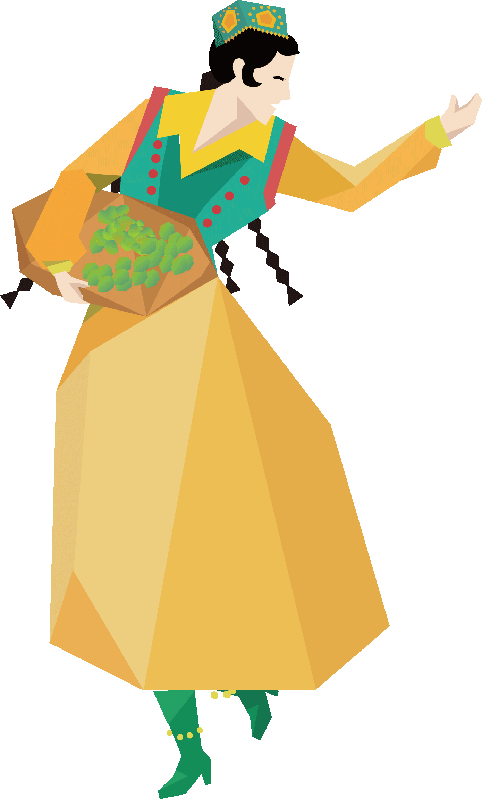
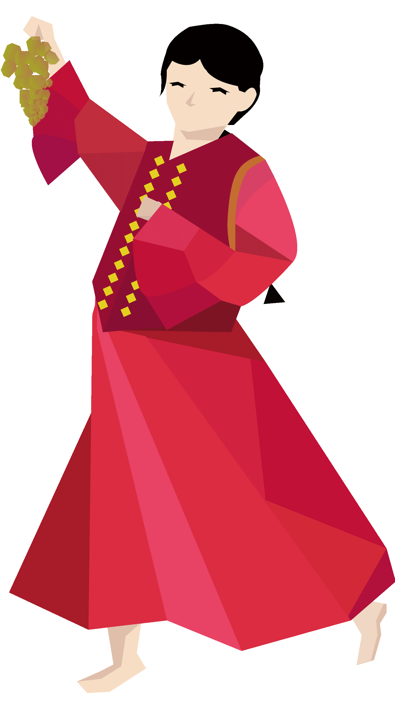
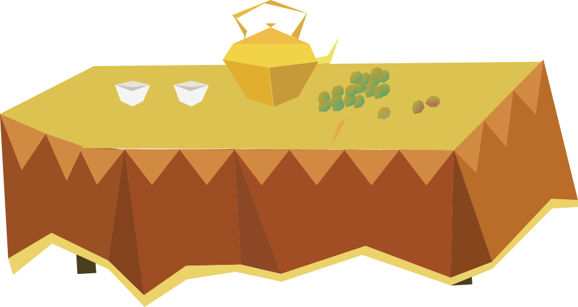
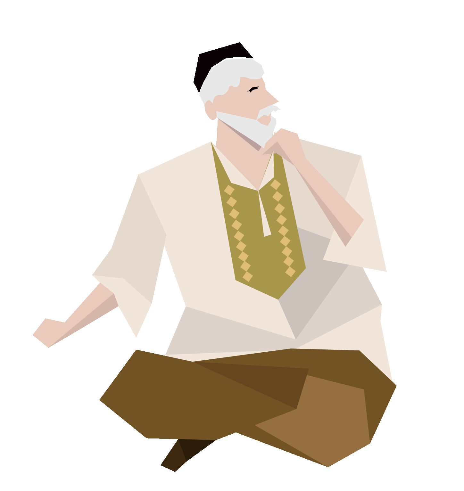
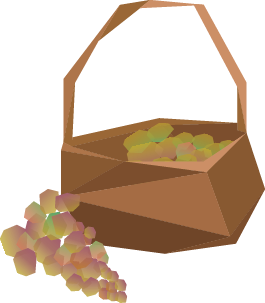
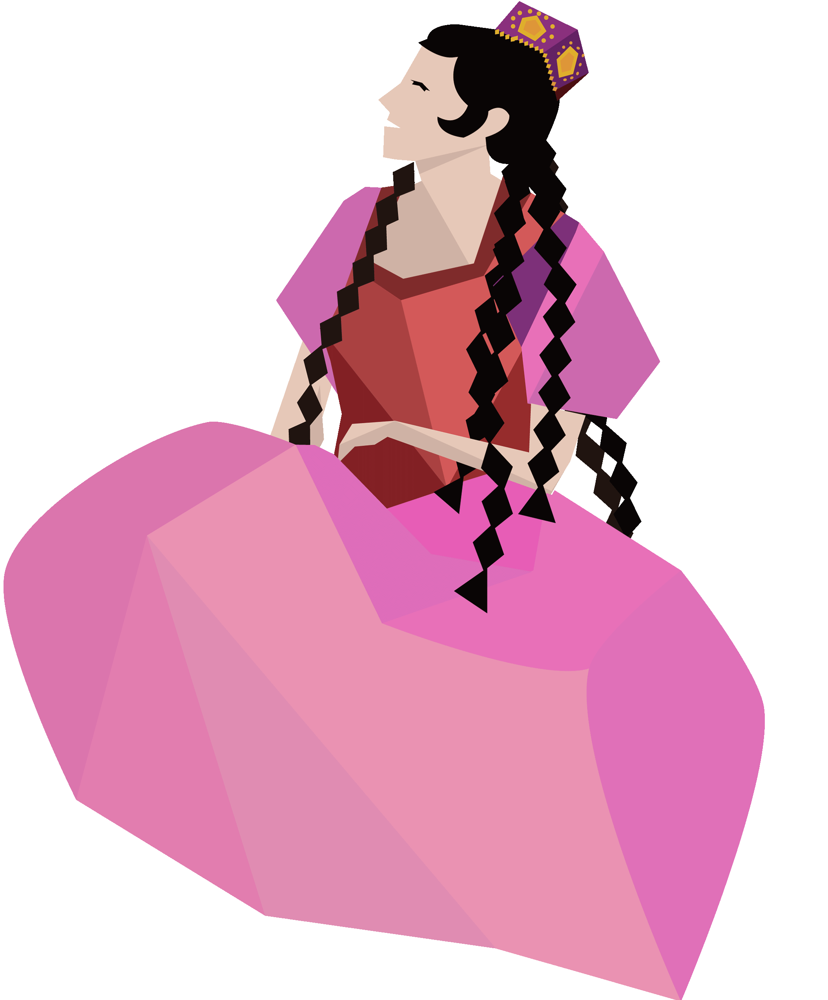
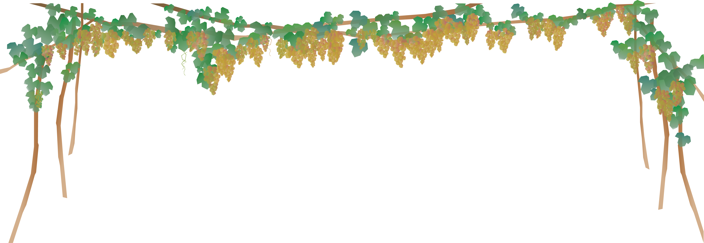
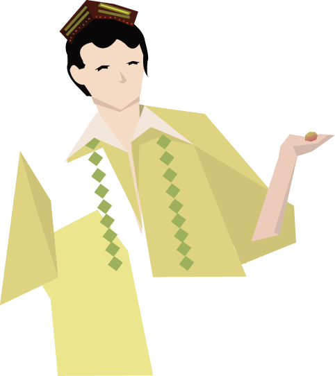
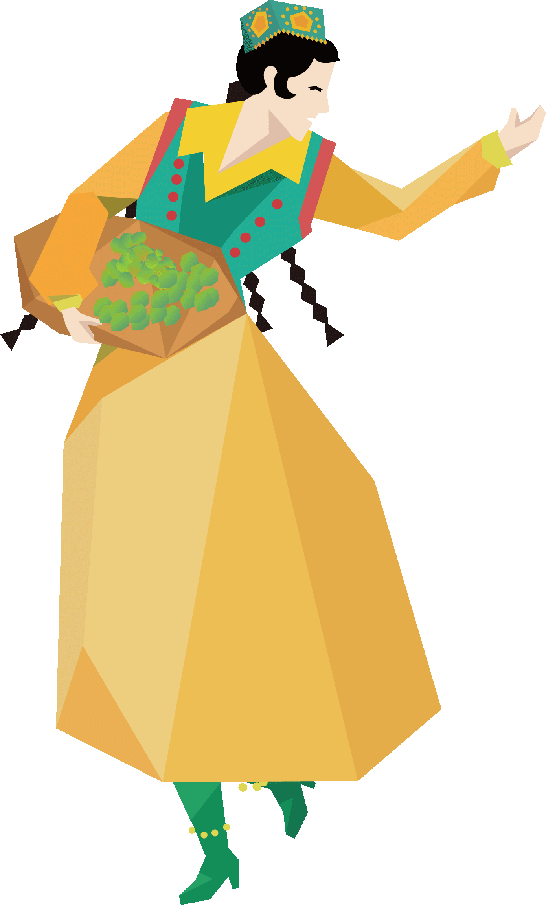
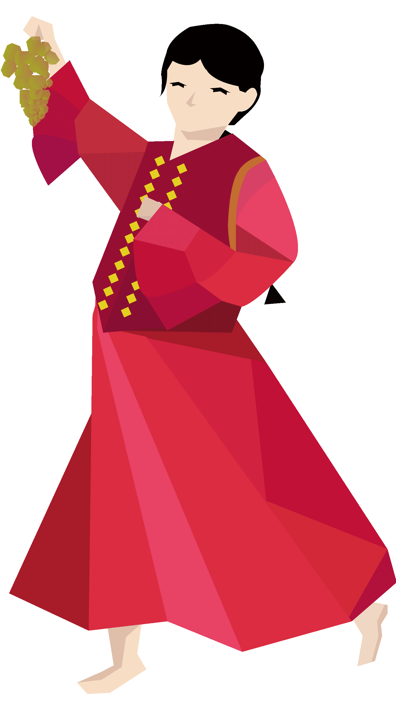
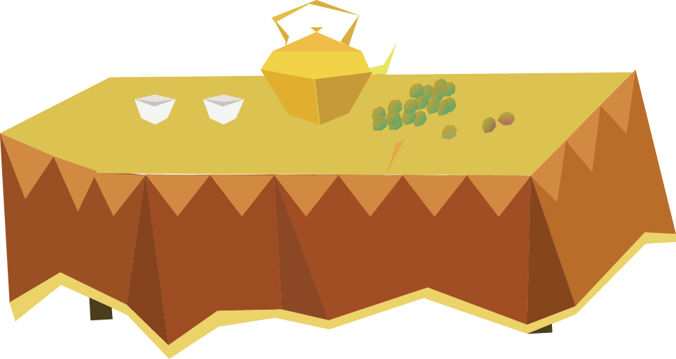
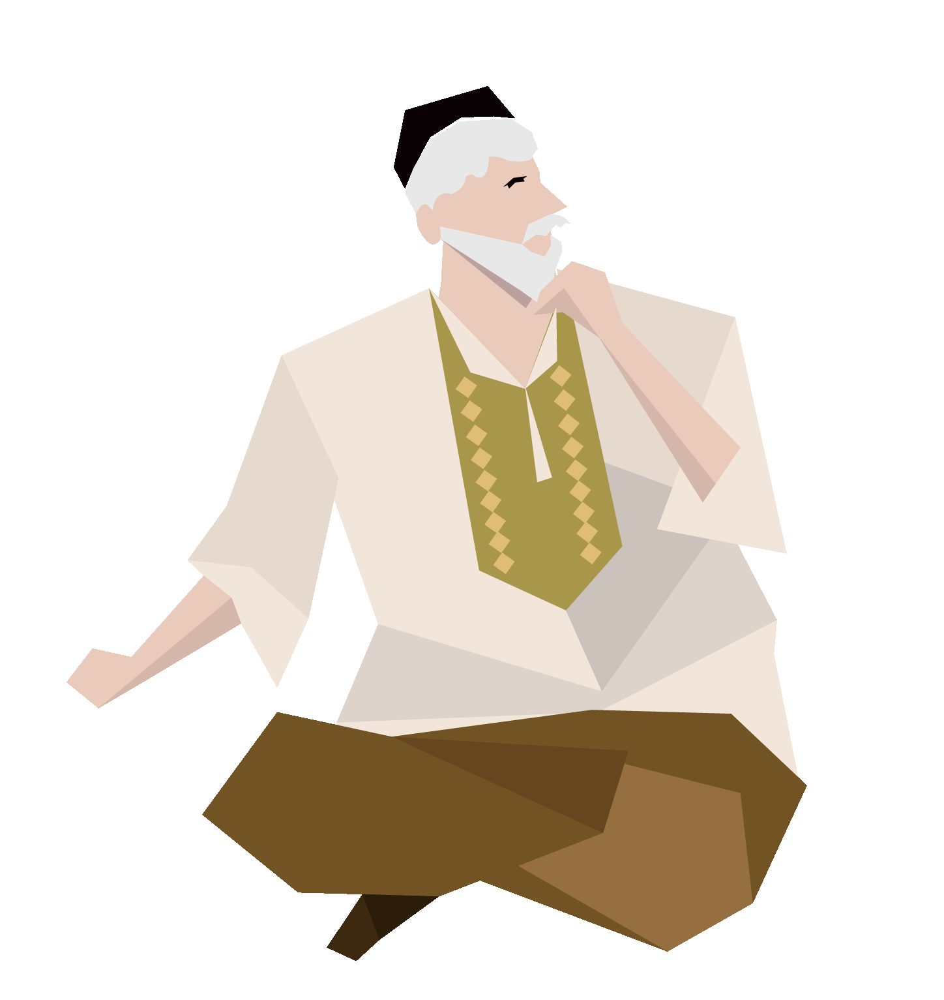
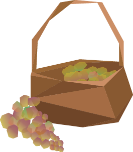
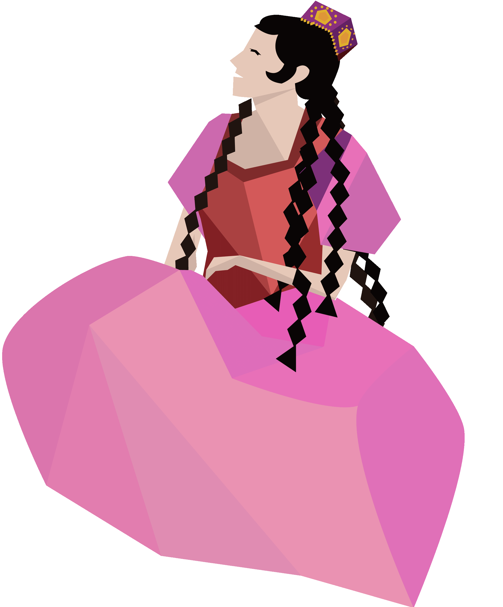
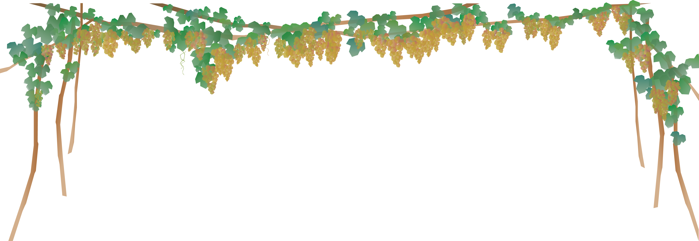
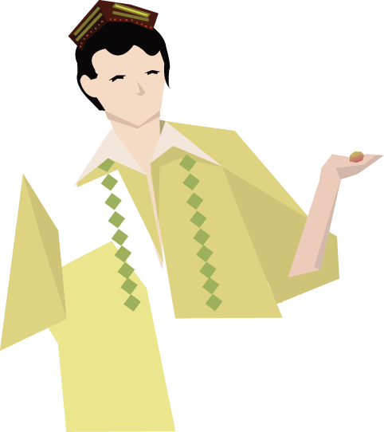

家庭诺鲁孜活动: 1：“诺鲁孜宴”。入夜时分，到处都可以听到击诺鲁孜乐的鼓号声。听到鼓 声的母亲们开始忙碌着作“诺鲁孜宴”的准备。首先取出象征着“福禄无边 ”的、去年诺鲁孜节打好后精心晾晒保存至今的“艾麦克馕”（薄饼馕）， 摆放在桌布正中央，四周摆放其它食品及干鲜果。父亲会庄重地将“福禄馕 ”掰成若干小块，均分给家里的每一个成员，然后随意尝食其它食品。吃完 后父亲举手祷告，子女们跟诵。“诺鲁孜宴”告一段落。 2：讲故事，很多家庭在这一天夜里彻夜不眠，家中成员会轮流讲故事，一 直到天明。 3：吃“诺鲁孜饭”。此饭又叫“普突克饭”。它是用被粗略打碎的麦子、玉 米等颗粒作物、陈积一冬的白箩卜、蔓菁、豆类再掺混刚吐绿的苜蓿和少量 肉丁或杏干制成。早在父亲开始讲第一个故事的时候，勤劳的母亲已将上述 物同时入锅，大火烧开，文火慢炖许久后完成。故做好饭后，你是无论如何 也猜不透这饭到底是有哪些东西构成的。饭做好后，不仅要供自家人享用， 而且还要分送给邻居和较贫困人家以后，一家人才能围坐在一起吃“普突克 饭”。 4：“挪巢”。这用现代词语可解释为在家里进行一次彻底的打扫卫生。吃完 “诺鲁孜饭”后，紧接着家家户户都投入到了打扫卫生的活动中。一般情况下， 就像是一次搬家，家里的物品会被搬到室外，一件一件擦拭，再一件一件搬 回室内（条件好的人家还要漆刷墙面），然后拆洗被褥、冬装，洗净后入箱 ，换春夏服装。（富裕家庭的“挪巢”一般进行一周左右）。 5：移花栽树。“挪巢”进行当中，人们纷纷把冬天搬到室内的花盆搬到室外， 修剪、整理、清洗、移栽，布置到院内或者客厅、花室，植树造林等。 6：拜年请安。诺鲁孜节的第一天，小媳妇们领着丈夫带着孩子回娘家向二 老拜年请安。 7：打“诺鲁孜馕”。各家各户会在“挪巢”过程中重建和维修馕坑馕灶，打一 坑“诺鲁孜馕”，从中挑选几个熟透的馕，精心晾晒，把它作为福禄的“引子 ”留到来年“诺鲁孜节”使用。而其它的除自己用外，还分送给亲家、独立成 家的子女、街坊邻居品尝。 8：踏青。诺鲁孜节也被称为“踏青节”。这时每家每户没有不吃苜蓿饺子、 苜蓿烤包子的。刚刚吐绿的苜蓿被视为是上苍赐给人类的第一道绿色食物， 是五谷的序曲，它是清理五脏六肺、败火排气的上好食物。大多数城里人此 时都会走出家门，在欣赏大好春色的同时，亲手采摘苜蓿，做苜蓿饺子。除 自家人吃之外，还送亲朋好友、邻居尝鲜。许多反目成仇、长年不走动的亲 戚、朋友、邻居就在这种送饭过程中培养了亲情，加深了友谊，达成谅解， 增进友谊，重归于好。而一些条件允许的家庭，在完成诺鲁孜饭、“挪巢” 之后，会备足干粮，赶着大车举家出门，到乡村踏青，充分领略大自然春光 的明媚。 9:扫墓。冰雪消融，万物复苏的时节，全家人前往亲人的坟头扫墓，在坟前移 花栽树、松土浇水，纪念逝去的亲人。